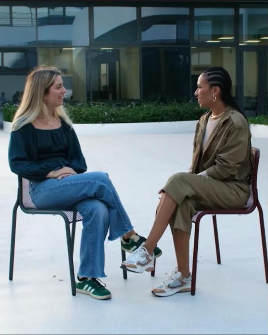
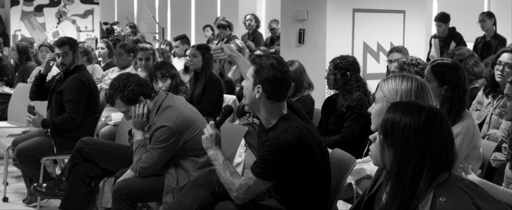

GUIA
Antes de votar: o que precisa de ter à mão
O e-mail e a palavra-passe da conta de estudante e o telemóvel para receber o código de verificação.
↗
PERGUNTAS E RESPOSTAS
O meu voto é mesmo secreto?
O voto fica separado do nome do estudante. O comprovativo mostra que o voto foi registado, não em quem votou.
↗
EXPLICADOR
O que faz a Associação de Estudantes
Representa os estudantes junto da universidade e organiza atividades ao longo do ano. O mandato dura dois anos.
↗